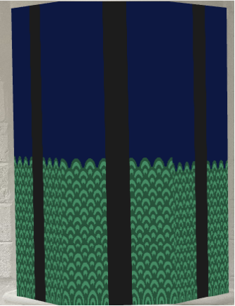

1. Door
The first part, "Opening the door", opens the door as the scene starts. I made two doors for both left and right. The pattern was inspired by a Korean traditional wave pattern. Technically, I used two nested for-loops differentiated by odd and even numbers. As time passes, a black rectangle gradually scales up and covers the whole shape to animate the door opening. This correlates with the final scene, "Closing the door", which uses the same door shape but the black rectangle gradually shrinks as if closing the door.